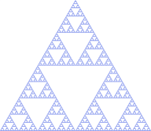
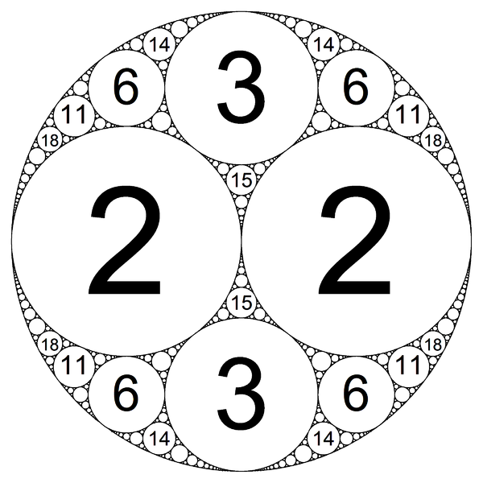
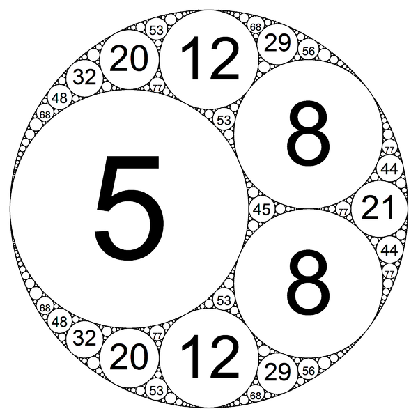
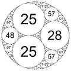
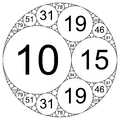
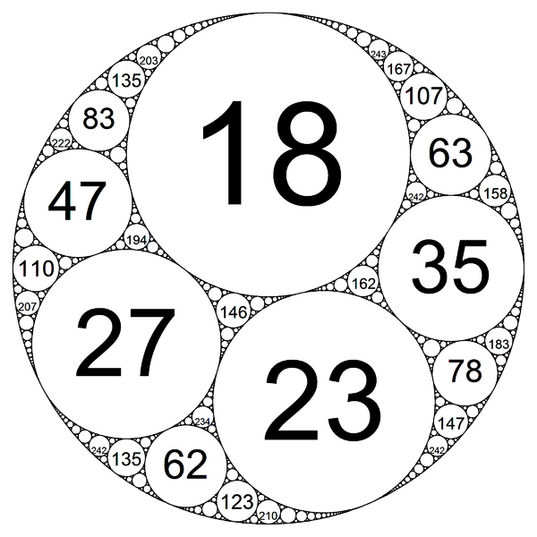

Seeing Music
As my first (real) post on this site, I want to share a project I did for my flute studio last semester. But first, a little background:
The Music
Francis Poulenc (1899-1963)[1] was a French pianist and composer whose work is a staple in classical flute repertoire. He wrote many sonatinas and other accompanied pieces for flute, all several pages long, but one piece stands out: a solo flute piece called “Un joueur de flûte berce les ruines” (“A flute player lullabies the ruins”). The piece is uncharacteristically short – only one page, four lines, thirteen bars – and is thus a perfect building block to inspire more art.
The Math
Fractals are one of the most artistic parts of mathematics. In their simplest form, they are geometric shapes which resemble themselves at different scales, that is, you can zoom in forever and keep seeing the same patterns. Many natural phenomena have fractal-like features – snowflakes, pineapples, and proteins, to name a few. To me, this is one of the indicators that mathematics truly is the language of the universe.
An example of a fractal you may have come across before is the Sierpinski triangle:

Notice that, on a large scale, the whole triangle consists of four smaller triangles. But if you look at the top triangle, you can see that it is in fact a Sierpinski Triangle itself, just scaled down to one-fourth the size of the full fractal!
The Apollonian gasket is another fractal. This one is generated by three numbers, which represent the curvatures (inverse of the radius) of three main circles and thus determine the large-scale structure of the fractal. Just like in the Sierpinski triangle, the rest is filled in through recursion. The Apollonian gaskets below (mercilessly ripped off of Wikipedia – which, by the way, also has some great information on the gasket) are each generated by a different set of four numbers:
| | | |
- |-|-|-|-
|  |||
(−1, 2, 2, 3)|(−3, 5, 8, 8)|(−12, 25, 25, 28)|(−6, 10, 15, 19)|(−10, 18, 23, 27)
Images by Todd Stedl (NefariousPhD) [GFDL (http://www.gnu.org/copyleft/fdl.html) or CC BY-SA 4.0 (https://creativecommons.org/licenses/by-sa/4.0)], from Wikimedia Commons
Hang on! Four numbers? Didn’t I just say the fractal is generated by three?
Although given above, the fourth number is a redundant piece of information. In reality, we only need the first three numbers of any of the sets given above to define our fractal. The fourth number is the curvature of a circle tangent to all three previous circles, which we can determine ourselves using Descartes’ Theorem:
[Given four mutually tangent circles C_1, C_2, C_3, and C_4, their curvatures satisfy the equation]
[2({k_1}^2+{k_2}^2+{k_3}^2+{k_4}^2) = (k_1+k_2+k_3+k_4)^2]
This formula can be rewritten as
[k_4 = k_1 + k_2 + k_3 \pm 2\sqrt{k_1k_2+k_2k_3+k_1k_3}]
(For details, see this blog post.)
So if we had only been given the set of numbers (-1, 2, 2), we could easily have deduced that the fourth number is 3:
[k_4 = -1 + 2 + 2 \pm 2*0}]
[k_4 = 3]
The important takeaway here is that the entire fractal is defined by three numbers. (Details on exactly how these numbers define the fractal – and how to draw your own Apollonian gasket from scratch – can be found in this wikiHow article.)
The CS
There are plenty of programs and sites on the Internet that can help you create your own fractal. One such site is Ludger Sandig’s Apollonian Gasket Generator. This is actually simply an online version of his command-line program apollon on GitHub, which I downloaded and used for this project.
The Cool Stuff
So how does all of this fit together?
The task at hand was to use Poulenc’s short piece as a starting point for another work of art. Because of my interest in mathematics, I wanted to turn this music into a fractal, in part because I suspected non-mathematicians rarely associate math with beauty.
There are many types of fractals to choose from for such a project. I eventually settled on the Apollonian gasket because I felt that circles best represented the smooth, connected style of Poulenc’s lullaby.
I broke the piece into six musical “sentences”, called phrases, which would each be represented with a different fractal as follows. I assigned each note in the phrase a number based on its subdivision: 2 for a half note, 4 for a quarter note, 8 for an eighth note, etc. This way, a busier phrase (with many small subdivisions, e.g. sixteenth notes) would correspond to a higher curvature, i.e. a smaller circle. These numbers were then grouped into threes. For example, the first group of the first phrase was (4, 8, 8) (corresponding to a quarter note followed by two eighth notes). Luckily for me, the phrases generally divided up very nicely (only the last two phrases posed a problem; in the first case, I treated the eighth note rest as a note, and in the second, I considered the whole note with the fermata as two separate whole notes).
Now I had several fractals for each phrase (using the first phrase as an example again, I had fractals generated by (4, 8, 8), (4, 4, 4), and (8, 8, 2)). I decided to nest these into each other, e.g. placing the (4, 4, 4) fractal into the biggest circle of the (4, 8, 8), and the (8, 8, 2) fractal into the biggest circle of the (4, 4, 4) (which in turn was nested in the (4, 8, 8) fractal). This composite fractal was the final phrase fractal.
Each of these six phrase fractals were finally placed in a larger, overarching fractal to represent the entire piece. This larger fractal was simply generated to look appealing to the eye (sorry – nothing actually mathematical here!). It consists of a large main circle ringed by several smaller ones, into which I placed the six phrase fractals from left to right. The final product is shown below.

As you may have noticed, the final fractal was generated based on rhythm alone. But music is much more than just rhythm! Sometime in the future, I may go back to this project and try to incorporate some other aspects (note names, octaves, dynamics, articulation…) into a new and improved fractal.
References
- Francis Poulenc. (2018). Retrieved from https://www.poulenc.fr/en/?Biography.